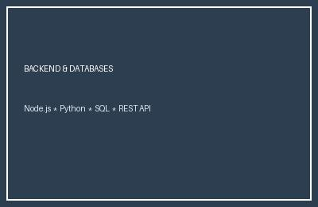

Фото 1: Кругле (border-radius: 60%, межа сіра):

Фото 2: Ефект hover (scale, межа зелена 30px double):

(наведіть курсор миші для перевірки ефекту)
HTML скорочення від "HyperText Mark-up Language" - перекладається як "Мова розмітка гіпертексту" https://w3schoolsua.github.io/.
Гіпертекст - це текст, що не послідовно зв'язаний з іншими документами, дозволяючи з першої сторінки документу перейти на останню
HTML впроваджує засоби для: створення структурованого документу шляхом позначення структурного складу тексту: заголовки, абзаци, списки, таблиці, цитати та інше; отримання інформації із Всесвітньої мережі через гіперпосилання; створення інтерактивних форм; включення
зображень,
звуку,
відео,
та
інших
об’єктів
до
тексту.
Фото 1: Кругле (border-radius: 60%, межа сіра):
Фото 2: Ефект hover (scale, межа зелена 30px double):

(наведіть курсор миші для перевірки ефекту)
1. W3Schools Українською (hover: фон синій, текст білий)
2. Документація MDN Web Docs (hover ефект зі скругленням)
Зображення як активне гіперпосилання (з межею, тінню та scale при наведенні):